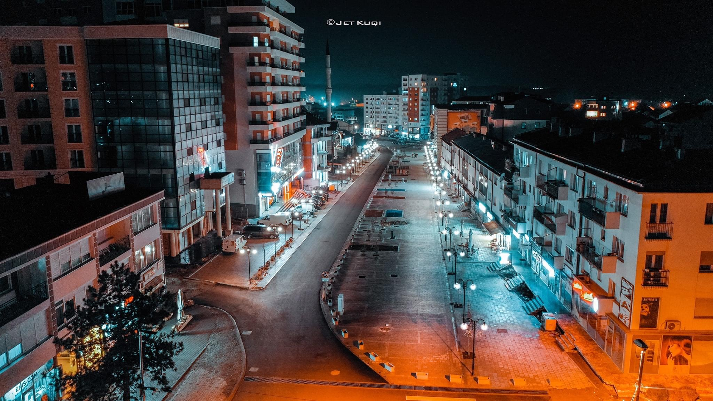

VRANIQI
ARRISHTA (Vraniqi)
Vendbanim që shtrihet rreth 12 km në juglindje të Therandës.Eshtë vendbanim kryesisht i tipit të shpërndarë. Shtrihet në një grykëku bashkohën Lumi i Madh dhe Lumi i Vogël. Fshati sot përbëhet kryesisht prej këtyre lagjeve: Muqaj. Kolgeci, Basha, Matoshi, Loshi, Rraqi, Shehu etj. Mikrotoponimet më kryesore: Gradina, Cuka, Gurët e Qarë,Kojbija, Vorret e Krushqve, Krojet e Krojzve, Firaja, Zallina, Kroi Varreza e Mortajës etj. Vendbanimi i vjetër është shtrirë në juglindje të fshatit, në krye,në lokalitetin Gradina. Në Qafë të Gradinësjanë gjetur dy gurë tëmullirit. Në lindje të fshatit në largësi 2 km janë gjetur tjegulla,tulladhe disa gjëra tjera. Është gjetur një guri në formë të gurit të mullirit,por shumë më i vogël. Është interesant përbërja e këtij guri. Vendbanimi moqëm ka ekzistuar edhe në pjesën verilindore, ku ishin stanet efshatit. Në dokumentet e shkruara përmendet në vitin 1348 në kartën eperandorit Dushan dhënë manastirit të shenjëtorëve Mihal e Gabriel teprizreni, pastaj në Librin e kujtimeve të manastirit të Shën Trinës afërMushtishtit i cili kishte filluar të mbahej që nga viti 1465. Në defterinkadastral të Sanxhakut të Shkodrës të vitit 1485, i varur nga Peja,kishte10 shtëpi e 1 beqar. Në këtë vendbanim ekzistojnë edhe Varret e Mortajës. Me emrin Ivranik është i regjistruar në sallnamet e vilajetit tëKosovës të vitit 1893 (1311 h), të vitit 1896 (1314 h) dhe të vitit1900(1318h). Nga ky vendbanim shumë banorë janë shpërngulur në qendrënkomunale në Therandë, Prizren, Piranë, Mirosalë të Ferizajt, etj.Gjatë Luftës së Dytë Botërore, pastaj masakrës së Tivarit si dhenë disa brigada kanë